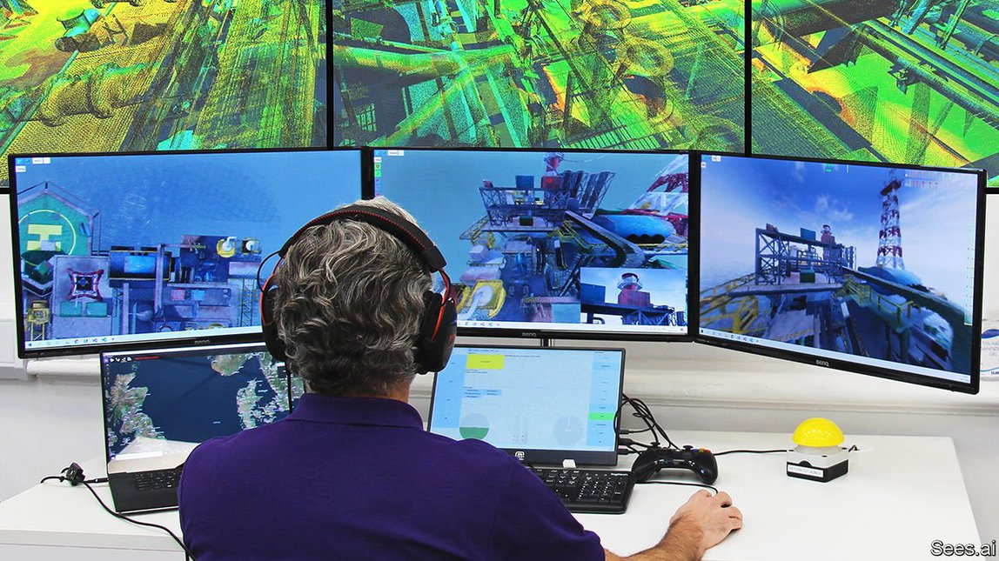

2021-08-02T02:05:44+00:00
高飞吧，无人机
监管放宽，无人机行业蓬勃发展
无人飞行器获得了更大的飞行自由【深度】
虽然开发无人机（也称无人飞行器，UAV）最初是为用作军用靶机和侦察机，但过去十年民用无人机的兴起造就了一个蓬勃发展的新产业。商用无人机尤其是悬停无人机被广泛用于检查输电线、建筑物和庄稼、航拍、运送医疗物资，甚至送比萨。关注这一行业的德国研究公司“无人机产业观察”（Drone Industry Insights）称，去年无人机市场的价值达到225亿美元。到2025年，这一数字预期将超过420亿美元。
有一个因素正在助推这个行业加速发展：各地空管部门在逐步放松对它的限制。对于这些各式各样时髦新奇的飞行器，空管部门态度谨慎是很自然的。在大多数国家，无人机不得在人群附近或建筑物密集区的上方飞行，且必须保持在操控员的视线范围内。特定飞行可以申请豁免，但过程可能较冗长，且附带各种限制条件。例如，对于超出操控员视线范围的飞行（即超视距飞行，BVLOS），监管机构通常坚持要求派地面观察员跟踪无人机。这意味着必须另外雇用和培训员工，这就增加了成本。
但是，随着业内公司不断积累飞行经验，情况开始发生变化。例如，今年1月，一家名为American Robotics的公司头一个获美国联邦航空管理局（FAA）批准，可在特定地点执行全自动无人机飞行，而无需配备任何现场操控员或观察员。该公司的工作人员在波士顿附近的总部监督飞行，即便这些无人机在远至内华达和堪萨斯的地点工作。
飞越无限
目前，American Robotics的无人机在农村飞行，勘察农田。该公司名为Scout的四轴无人机在安放于客户农场上的箱子里待命、充电，随时准备起飞。任务开始时，箱盖徐徐滑开，里面停在升降板上的无人机被抬升出来，准备起飞。起飞后，它会用各种传感器扫描客户的农田，收集作物及其生长环境的数据。任务完成后，它返回箱内，箱盖关闭，数据会被处理并传输给农场主，无人机则开始充电。
为防止空中相撞，Scout系统部署了安装在地面上的声传感器，它们可以听到从几公里外靠近的飞机的发动机和螺旋桨发出的声音。这样就能确定前来的飞机的方位，必要时还会指示无人机避让。该公司还计划用无人机勘察建筑物和其他基础设施。CEO里斯·莫泽（Reese Mozer）表示，到目前为止，该行业在“自主无人机的应用方面还只是蜻蜓点水”。
在英国也出现了类似的进展。4月，英国民航局（CAA）批准一家名为sees.ai的公司开展定期BVLOS飞行，不过是在一些指定的地点。其中包括伦敦西南部的萨里郡（Surrey）的一个大型建筑工地。“这是向前迈出的一大步，这样我们就可以不用事先拿到批准，有需要时直接起飞就好了。”该公司CEO约翰·麦肯纳（John McKenna）表示。目前，现场还必须有一名观察员，但此人不再需要始终与位于南海岸奇切斯特（Chichester）附近的公司总部里的飞行监测小组保持联系。该公司希望用不了多久现场留有观察员的规定也会被取消。
从公司名字也看得出来，sees.ai依靠人工智能（AI）来操控无人机。为了导航，无人机使用了多个摄像头，以及GPS、雷达和激光雷达（使用光而不是反射的无线电波）等系统，来创建周围环境的三维图像。经过训练的无人机软件可以识别建筑物和包括其他飞行器在内的障碍物，在必要时避让。这种软件还让无人机能在GPS和无线电控制信号容易中断的隧道内和油井下飞行。
虽然新冠疫情耽误了一些项目，但也推动了另一些项目，特别是运送医疗物资。2019年，迅蚁科技获得了中国民航局颁发的首个城市场景无人机试运行牌照。疫情期间，它很快从为公司所在地杭州的星巴克和肯德基送餐转为运送血液和血样。
迅蚁在杭州部分医院和实验室的停车场上设置了类似小型集装箱的自动化无人机“港口”。医务人员通过这些起降站的侧门把血样或血液放进去，它们会被自动装载到停在箱子顶部的无人机上。到达目的地后，无人机降落在另一个港口，卸下货物。人们随后便可从侧门取货。
迅蚁的无人机用GPS和摄像头导航，并由电脑系统调度和监控。飞行控制中心的两名工作人员最多可以同时监视八架无人机，不过眼下公司还是安排了一些实地观察员。迅蚁表示，过去经地面交通运送医院物资耗时半小时或更久，现在公司的无人机将它缩短到了几分钟。
西方几家大公司也热衷于无人机送货业务。亚马逊、UPS和谷歌的母公司Alphabet都有项目在开发中。它们通常设在偏远地区，因为那里载人飞行很少，不用担心撞机。例如UPS基金会（UPS Foundation）就在卢旺达和加纳与当地的组织合作运送医疗物资。
一些北欧国家的天空相对来说也比较畅通无阻，尤其适合无人机飞行。Alphabet的无人机送货子公司Wing在赫尔辛基的运营进入了第三年，用无人机将杂货和食品送到家门口和野餐区等公共场所。Wing的无人机用缆绳上的挂钩从商家那里取走货物，然后运送给客户。这些无人机的飞行高度为30至40米，远低于有人驾驶飞机通常的飞行高度。但以防万一，飞行监管团队还是接入了地面无线电，监听飞机应答器播报区域内所有飞机的位置。Wing还在研究在自己的无人机上使用微型应答器。
在冰岛首都雷克雅未克，问世最久的无人机运送业务之一同样保持了强劲势头。本地公司aha和以色列无人机服务公司Flytrex合作，从2017年开始用无人机运送杂货和餐食。目前，Flytrex正设法在美国也开展类似的业务，在北卡罗来纳州的费耶特维尔（Fayetteville）从一家沃尔玛超市向居民送货。5月25日，它获得了FAA的批准，可以在人群上空飞行。目前，它的远程操控员仍必须让无人机保持在视线范围内，但不再需要地面观察员。“这是一项重大进展，我们服务的家庭数量将显著增加。”Flytrex的老板亚里夫·巴什（Yariv Bash）表示。该公司的无人机使用GPS接收器和其他传感器导航，但没有用摄像头，因为担心美国人可能认为摄像头会侵犯隐私。
天上掉馅饼
5月21日，也就是Flytrex获得FAA批准的四天前，爱尔兰无人机送货公司Manna获得了欧盟颁发的一种新型运营许可。在一定范围内，该公司可以通过自己签署保证书来批准无人机飞行。过去一年，Manna一直在戈尔韦（Galway）郊区运送食品和杂货，飞行超过3.5万次，现在它打算在其他城市开展业务。
要让这类进展继续推进，运营商必须证明自己的无人机拥有和有人驾驶飞机一样出色的相互发现和避让能力。英国民航局的创新主管戴维·泰特（David Tait）表示：“飞行安全等级不会因为有人操纵或远程操纵而有什么改变。”对于无人机用什么方法达到那样的飞行安全等级，泰特持开放态度，但他认为不管什么办法都会涉及多种技术的融合，包括sees.ai和Wing等公司正在开发的一些技术。
难题之一是在非管制空域飞行的轻型飞机有时会按照所谓的目视飞行规则（Visual Flight Rules）飞行。根据这种规定，只要飞行过程中能见度良好，同时飞行员保持警觉，他们就不必携带应答器和其他仪器。
加州公司Iris Automation认为自己已经找到了解决方案，那就是给无人机也配备一双敏锐的“眼睛”。它们由五个小摄像头组成，在无人机周围实现360度的视角。AI软件不断扫描这张全景图像，该软件经过训练，能识别几公里外不同类型的飞机。这套系统可以计算出正在靠近的飞机的距离和航向，并在可能发生碰撞时自动调整无人机的飞行路线。
这套设备的起步价为9000美元，从飞机制造的角度来看不算贵。一些无人机已经安装了这套设备，但Iris的老板、自己也会驾驶飞机的约翰·达穆什（John Damush）同时还在一架双座Piper Cub飞机上测试它。他认为，这样的无人机技术对有人驾驶飞行也有帮助，因为不同于Iris的无人机，飞行员的后脑勺上可没长眼睛。
2021-08-02T02:05:44+00:00
Let the drones fly high
Business is booming as regulators relax drone laws
Uncrewed aerial vehicles get more freedom to fly
ALTHOUGH DRONES, or uncrewed aerial vehicles (UAVs) as they are also known, were originally developed for military target practice and surveillance, the civilian versions that have emerged over the past decade have created a thriving new industry. Commercial UAVs, especially the hovering type, are used for jobs ranging from inspecting power lines, buildings and crops, to aerial photography, transporting medical supplies and even delivering pizzas. The value of this market reached $22.5bn last year, according to Drone Industry Insights, a German research firm with its eye on the business. By 2025 that figure is expected to exceed $42bn.
Something helping to accelerate this growth is a gradual relaxation of the strictures that aviation authorities, being naturally cautious about all these newfangled flying machines taking to the sky, have imposed on the industry. In most countries, drones may not be flown near people or over built-up areas, and must be kept within view of their operator. Exemptions may be sought for specific flights, but this can be a long-winded process, hedged with restrictions. For instance, regulators have usually insisted on ground observers being used to follow flights beyond an operator’s visual line-of-sight, or BVLOS as it is known. This means extra staff have to be hired and trained, which pushes up costs.
However, as companies build up their flying experience, things are starting to change. In January, for example, a firm called American Robotics became the first operator approved by America’s Federal Aviation Administration (FAA) to fly automated UAVs at specific sites without any pilots or observers being present. Staff at the company’s base near Boston oversee these flights, even though the drones operate as far away as Nevada and Kansas.
To infinity and beyond
At the moment, American Robotics’ flights take place in rural areas. Their purpose is to survey farmland. The company’s quadcopter Scout drones wait, charged up and ready to fly, in boxes located on customers’ farms. At the beginning of a mission the box lid slides open and the drone, sitting on its landing pad, is raised for take-off. Once flying, it scans the customer’s fields with a variety of sensors, gathering data on crops and growing conditions. When done, it returns to its box, the lid closes, the data are processed and passed to the farmer, and the drone is recharged.
To avoid aerial collisions, the Scout system employs ground-based acoustic sensors which can hear the engines and propellers of approaching planes from a distance of several kilometres. This allows the position of an incoming flight to be plotted and, if necessary, the drone is instructed to keep clear. The company also plans to survey buildings and other infrastructure. Up to this point, says Reese Mozer, its chief executive, the industry has been “scratching the surface of autonomous drone use”.
Something similar is happening in Britain. In April the Civil Aviation Authority (CAA) authorised a firm called sees.ai to carry-out routine BVLOS flights, albeit at specified locations. These include a large construction site in Surrey, to the south-west of London. “It is a big step forward and allows us to fly as often as we like without prior authorisation,” says John McKenna, the firm’s chief executive. For the time being, an observer is required on site, but that person need no longer be in constant contact with the flight-monitoring team at the company’s base near Chichester, on the south coast. The firm hopes that this requirement will soon be lifted.
As its name suggests, sees.ai relies on artificial intelligence to operate its UAVs. To navigate, the craft employ several cameras and also other systems, including GPS, radar and lidar (which uses light instead of reflected radio waves) to build up three-dimensional images of their surroundings. The drones’ software is trained to recognise structures and obstacles, including other aircraft, and to take evasive action if needed. This also lets the craft fly inside tunnels and under oil rigs, where GPS and radio-control signals are easily lost.
Although the covid-19 epidemic has delayed some projects, it has spurred others along—especially the delivery of medical supplies. Antwork Technology, which in 2019 received the first licence granted by China’s Civil Aviation Administration for urban UAV trials, moved quickly from dropping off orders from Starbucks and KFC around its home town of Hangzhou to ferrying blood supplies and samples.
Antwork placed automated drone “ports” that resemble small shipping containers in the car parks of some of the region’s hospitals and laboratories. Medical staff post samples and supplies through doors in the sides of these ports. They are then loaded automatically into a drone sitting on top of the container. At the end of its journey, a drone lands on another port and deposits its cargo, which can then be picked up from the door.
Antwork’s drones, which navigate using GPS and cameras, are governed by a computerised scheduling and monitoring system. Two people at a flight-control centre keep an eye on up to eight drones simultaneously, though for the time being the company also uses some ground observers. Antwork says its drones have cut to a few minutes the time taken to make hospital deliveries that once took half an hour or more by road.
Several big outfits in the West are also keen on the drone-delivery business. Amazon, UPS and Alphabet, Google’s parent, all have projects in development. Often these are based in remote areas, where there is little manned aviation to worry about bumping into. UPS Foundation, for instance, works with local groups delivering medical supplies in Rwanda and Ghana.
Some Nordic countries, where the skies are also relatively clear, have been especially drone-friendly. Alphabet’s drone-delivery subsidiary, Wing, has begun its third year of flights in Helsinki, dropping off groceries and food to homes and some public sites, such as picnic areas. Wing’s drones employ a hook on a cable to pick up goods from merchants and deliver them to customers. The drones fly at an altitude of 30-40 metres, which is well below that at which crewed aircraft typically operate. But just in case, the team overseeing the operation is plugged into a ground-based radio that monitors transponders broadcasting the positions of any aircraft in the area. Wing is also investigating the use of miniature transponders on its drones.
Over in Iceland’s capital, Reykjavik, one of the longest-established drone-delivery businesses is also still going strong. This is a partnership between aha, a local company, and Flytrex, an Israeli drone-service firm. Together, they have been delivering groceries and meals by UAV since 2017. Flytrex is now trying to get something similar off the ground in America, with a delivery service from a local Walmart to homes in Fayetteville, North Carolina. On May 25th it was given permission by the FAA to fly above people. For now, its remote pilots still have to keep their craft in view, but ground observers are no longer required. “This is a large step forward and allows us to significantly expand the number of front and backyards we can service,” says Yariv Bash, Flytrex’s boss. The firm’s drones navigate using GPS receivers and other sensors—but not cameras, because of fears that Americans might consider them to be intrusive.
Heaven sent
Four days earlier than Flytrex, on May 21st, Manna, an Irish drone-delivery company, obtained a new type of European Union operating certificate. Within certain limits, it allows the firm to authorise UAV operations on its own recognisance. Manna has been delivering food and groceries in suburban Galway for the past year, carrying out more than 35,000 flights, and now aims to set up operations in other cities.
For such progress to continue, operators will have to prove their UAVs have as good an ability as crewed aircraft to detect and avoid one another. “The levels of safety are not going to change between piloted aviation and remotely piloted aviation,” says David Tait, head of innovation at the CAA. Mr Tait is open to alternatives about how drones might do that, but thinks it will involve a mixture of technologies, including some that firms like sees.ai and Wing are developing.
One difficulty is that light aircraft flying in uncontrolled airspaces sometimes operate under so-called Visual Flight Rules. These absolve pilots of the obligation to carry transponders and other instrumentation as long as the journey is being made in conditions of clear visibility and they keep their eyes peeled.
Iris Automation, in California, thinks it has a solution to this problem, which is to give UAVs the equivalent of a sharp pair of eyes. These come in the form of five small cameras that create a 360° view around a drone. This panoptic image is scanned constantly by AI software which has been trained to recognise different types of aircraft from several kilometres away. The system can calculate an incoming aircraft’s range and heading, and automatically adjust the drone’s flight path if a collision looks likely.
Costing from $9,000, this is a reasonably inexpensive piece of kit in aviation terms. It is already fitted to some drones, but John Damush, Iris’s boss and himself a pilot, is also testing it on a two-seater Piper Cub. He thinks drone-tech like this could help crewed flight too, because, unlike Iris’s drones, pilots don’t have eyes in the backs of their heads. ■
2021-08-02T02:05:44+00:00
高飛吧，無人機
監管放寬，無人機行業蓬勃發展
無人飛行器獲得了更大的飛行自由【深度】
雖然開發無人機（也稱無人飛行器，UAV）最初是為用作軍用靶機和偵察機，但過去十年民用無人機的興起造就了一個蓬勃發展的新產業。商用無人機尤其是懸停無人機被廣泛用於檢查輸電線、建築物和莊稼、航拍、運送醫療物資，甚至送比薩。關注這一行業的德國研究公司“無人機產業觀察”（Drone Industry Insights）稱，去年無人機市場的價值達到225億美元。到2025年，這一數字預期將超過420億美元。
有一個因素正在助推這個行業加速發展：各地空管部門在逐步放鬆對它的限制。對於這些各式各樣時髦新奇的飛行器，空管部門態度謹慎是很自然的。在大多數國家，無人機不得在人群附近或建築物密集區的上方飛行，且必須保持在操控員的視線範圍內。特定飛行可以申請豁免，但過程可能較冗長，且附帶各種限制條件。例如，對於超出操控員視線範圍的飛行（即超視距飛行，BVLOS），監管機構通常堅持要求派地面觀察員跟蹤無人機。這意味着必須另外僱用和培訓員工，這就增加了成本。
但是，隨着業內公司不斷積累飛行經驗，情況開始發生變化。例如，今年1月，一家名為American Robotics的公司頭一個獲美國聯邦航空管理局（FAA）批准，可在特定地點執行全自動無人機飛行，而無需配備任何現場操控員或觀察員。該公司的工作人員在波士頓附近的總部監督飛行，即便這些無人機在遠至內華達和堪薩斯的地點工作。
飛越無限
目前，American Robotics的無人機在農村飛行，勘察農田。該公司名為Scout的四軸無人機在安放於客戶農場上的箱子里待命、充電，隨時準備起飛。任務開始時，箱蓋徐徐滑開，裡面停在升降板上的無人機被抬升出來，準備起飛。起飛後，它會用各種傳感器掃描客戶的農田，收集作物及其生長環境的數據。任務完成後，它返回箱內，箱蓋關閉，數據會被處理並傳輸給農場主，無人機則開始充電。
為防止空中相撞，Scout系統部署了安裝在地面上的聲傳感器，它們可以聽到從幾公里外靠近的飛機的發動機和螺旋槳發出的聲音。這樣就能確定前來的飛機的方位，必要時還會指示無人機避讓。該公司還計劃用無人機勘察建築物和其他基礎設施。CEO里斯·莫澤（Reese Mozer）表示，到目前為止，該行業在“自主無人機的應用方面還只是蜻蜓點水”。
在英國也出現了類似的進展。4月，英國民航局（CAA）批准一家名為sees.ai的公司開展定期BVLOS飛行，不過是在一些指定的地點。其中包括倫敦西南部的薩里郡（Surrey）的一個大型建築工地。“這是向前邁出的一大步，這樣我們就可以不用事先拿到批准，有需要時直接起飛就好了。”該公司CEO約翰·麥肯納（John McKenna）表示。目前，現場還必須有一名觀察員，但此人不再需要始終與位於南海岸奇切斯特（Chichester）附近的公司總部里的飛行監測小組保持聯繫。該公司希望用不了多久現場留有觀察員的規定也會被取消。
從公司名字也看得出來，sees.ai依靠人工智能（AI）來操控無人機。為了導航，無人機使用了多個攝像頭，以及GPS、雷達和激光雷達（使用光而不是反射的無線電波）等系統，來創建周圍環境的三維圖像。經過訓練的無人機軟件可以識別建築物和包括其他飛行器在內的障礙物，在必要時避讓。這種軟件還讓無人機能在GPS和無線電控制信號容易中斷的隧道內和油井下飛行。
雖然新冠疫情耽誤了一些項目，但也推動了另一些項目，特別是運送醫療物資。2019年，迅蟻科技獲得了中國民航局頒發的首個城市場景無人機試運行牌照。疫情期間，它很快從為公司所在地杭州的星巴克和肯德基送餐轉為運送血液和血樣。
迅蟻在杭州部分醫院和實驗室的停車場上設置了類似小型集裝箱的自動化無人機“港口”。醫務人員通過這些起降站的側門把血樣或血液放進去，它們會被自動裝載到停在箱子頂部的無人機上。到達目的地後，無人機降落在另一個港口，卸下貨物。人們隨後便可從側門取貨。
迅蟻的無人機用GPS和攝像頭導航，並由電腦系統調度和監控。飛行控制中心的兩名工作人員最多可以同時監視八架無人機，不過眼下公司還是安排了一些實地觀察員。迅蟻表示，過去經地面交通運送醫院物資耗時半小時或更久，現在公司的無人機將它縮短到了幾分鐘。
西方几家大公司也熱衷於無人機送貨業務。亞馬遜、UPS和谷歌的母公司Alphabet都有項目在開發中。它們通常設在偏遠地區，因為那裡載人飛行很少，不用擔心撞機。例如UPS基金會（UPS Foundation）就在盧旺達和加納與當地的組織合作運送醫療物資。
一些北歐國家的天空相對來說也比較暢通無阻，尤其適合無人機飛行。Alphabet的無人機送貨子公司Wing在赫爾辛基的運營進入了第三年，用無人機將雜貨和食品送到家門口和野餐區等公共場所。Wing的無人機用纜繩上的掛鉤從商家那裡取走貨物，然後運送給客戶。這些無人機的飛行高度為30至40米，遠低於有人駕駛飛機通常的飛行高度。但以防萬一，飛行監管團隊還是接入了地面無線電，監聽飛機應答器播報區域內所有飛機的位置。Wing還在研究在自己的無人機上使用微型應答器。
在冰島首都雷克雅未克，問世最久的無人機運送業務之一同樣保持了強勁勢頭。本地公司aha和以色列無人機服務公司Flytrex合作，從2017年開始用無人機運送雜貨和餐食。目前，Flytrex正設法在美國也開展類似的業務，在北卡羅來納州的費耶特維爾（Fayetteville）從一家沃爾瑪超市向居民送貨。5月25日，它獲得了FAA的批准，可以在人群上空飛行。目前，它的遠程操控員仍必須讓無人機保持在視線範圍內，但不再需要地面觀察員。“這是一項重大進展，我們服務的家庭數量將顯著增加。”Flytrex的老闆亞里夫·巴什（Yariv Bash）表示。該公司的無人機使用GPS接收器和其他傳感器導航，但沒有用攝像頭，因為擔心美國人可能認為攝像頭會侵犯隱私。
天上掉餡餅
5月21日，也就是Flytrex獲得FAA批准的四天前，愛爾蘭無人機送貨公司Manna獲得了歐盟頒發的一種新型運營許可。在一定範圍內，該公司可以通過自己簽署保證書來批准無人機飛行。過去一年，Manna一直在戈爾韋（Galway）郊區運送食品和雜貨，飛行超過3.5萬次，現在它打算在其他城市開展業務。
要讓這類進展繼續推進，運營商必須證明自己的無人機擁有和有人駕駛飛機一樣出色的相互發現和避讓能力。英國民航局的創新主管戴維·泰特（David Tait）表示：“飛行安全等級不會因為有人操縱或遠程操縱而有什麼改變。”對於無人機用什麼方法達到那樣的飛行安全等級，泰特持開放態度，但他認為不管什麼辦法都會涉及多種技術的融合，包括sees.ai和Wing等公司正在開發的一些技術。
難題之一是在非管制空域飛行的輕型飛機有時會按照所謂的目視飛行規則（Visual Flight Rules）飛行。根據這種規定，只要飛行過程中能見度良好，同時飛行員保持警覺，他們就不必攜帶應答器和其他儀器。
加州公司Iris Automation認為自己已經找到了解決方案，那就是給無人機也配備一雙敏銳的“眼睛”。它們由五個小攝像頭組成，在無人機周圍實現360度的視角。AI軟件不斷掃描這張全景圖像，該軟件經過訓練，能識別幾公里外不同類型的飛機。這套系統可以計算出正在靠近的飛機的距離和航向，並在可能發生碰撞時自動調整無人機的飛行路線。
這套設備的起步價為9000美元，從飛機製造的角度來看不算貴。一些無人機已經安裝了這套設備，但Iris的老闆、自己也會駕駛飛機的約翰·達穆什（John Damush）同時還在一架雙座Piper Cub飛機上測試它。他認為，這樣的無人機技術對有人駕駛飛行也有幫助，因為不同於Iris的無人機，飛行員的後腦勺上可沒長眼睛。